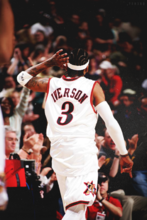
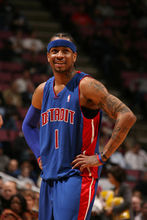
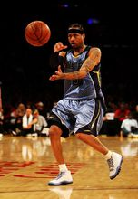

掘金时期

2006年12月20日，艾弗森被交换到丹佛掘金队与当家球星卡梅隆・安东尼结为黄金双枪。 2006-2007赛季，艾弗森场均贡献24.8分和7.2次助攻，这样的数据虽然不能和他巅峰时期同日而语，但绝对可以和当时联盟一流的后卫相媲美。 2007-2008赛季，艾弗森依然延续着全能的发挥，掘金战绩虽然有所提升，达到50胜32负，但球队依然没有逃脱季后赛首轮游的噩梦。 2008年11月掘金高层快刀斩乱麻，在赛季开始不久便和活塞达成了了一笔交易，送走了艾弗森，迎来了MVP级后场昌西・比卢普斯。
活塞时期
2008年11月，艾弗森被交易到活塞队，表现抢眼，并打败了开赛连续11场不败的湖人队。该赛季常规赛末段，由于不满活塞主教练迈克尔・科里（Michael Curry）将其贬为替补的决定，艾弗森与球队决裂，活塞管理层借口伤病将他排除在季后赛出场名单外（后因报名人数限制原因进入名单，但从未出场）。由于他的打球风格跟强调团队合作的活塞队完全不和，导致球队战绩渐渐的从东部联盟第4、第5、渐渐跑到第7、第8。之后到了2月，还出现了从1994-1995球季后的首次8连败在第8败时，艾弗森还因背伤提早下场，但神奇的是在他没上场比赛后，活塞打倒了东部联盟第3的魔术，终止8连败，并在之后的比赛分别打败东部联盟第2的凯尔特人，西部联盟第3的掘金，之后的比赛艾弗森变成了第6人，这也让他非常不高兴，到了常规赛最后一个月，艾弗森又因为背伤复发而提早放暑假，而活塞以东部联盟第8种子进入季后赛，在第1轮就被骑士队4-0横扫回家。
灰熊时期
2009年9月9日，艾弗森接受了孟菲斯灰熊队提出的1年350万美元的报价，孟菲斯成为艾弗森职业生涯的第四站。该赛季截止到11月8日艾弗森总共为灰熊打了三场比赛，球队在这三场比赛里全部输给了对手。在三场比赛里艾弗森全部以板凳身份出战，场均出战22.3分钟能够为球队贡献12.3分和3.7次助攻，投篮命中率达到了57.7%，12次走上罚球线命中6球，灰熊的战绩为1胜5负在西南赛区垫底。11月16日灰熊高层决定球队已经终止了和艾佛森之间的一年合同。艾弗森再次成为自由球员。 2009年11月26日，阿伦・艾弗森发布公开信宣布退役。一天以后，阿伦・艾弗森收回退役决定。

]
重返76人
2009年12月3日，艾弗森宣布与费城76人队签约一年非保障合同与安德烈·伊戈达拉共同冲击季后赛，答应再次回到赛场。重披费城3号。[2]
2009年12月7日，76人主场迎战掘金，艾弗森时隔三年后重返费城后的首秀，但并不在最佳状态的艾弗森无法帮助球队取胜，76人以83-93不敌掘金，艾弗森11投4中拿下11分、6次助攻和5个篮板。
2010年年初，艾弗森因小女儿患怪病，高烧不退，缺阵了全明星和比赛，艾弗森为了照顾女儿，与76人解除了2010赛季剩余合约。
2010年7月6日，艾弗森在自己微博上发表声明希望能重新返回NBA。
欧洲俱乐部
2010年10月25日，艾弗森同意以400万美元的身价为土耳其贝斯科塔斯篮球俱乐部效力两年。在2010-11赛季，在征战欧洲杯时，艾弗森出场7次，总共上场67分钟，总共得到了28分和9个篮板，还有9次助攻。这3场比赛中，他两分球22投7中，三分球5投3中，罚球10罚5中。 2011年1月12日，由于艾弗森在土耳其联赛中小腿受伤，他准备离开土耳其返回美国进行手术，需要6至8周的休养时间。最终，艾弗森选择了返回美国做手术，并退出篮坛。同时，也就结束了在土耳其的职业生涯。
宣布退役

2013年10月30日，阿伦·艾弗森正式宣布退役。他的NBA生涯场均出战41.1分钟，获得26.7分、6.2次助攻和2.2次抢断。
2014年3月1日，艾弗森3号球衣在76人主场对奇才的中场休息时退役。
2016年4月4日，阿伦·艾弗森正式入选2016年奈·史密斯篮球名人纪念堂。[3]
2018年6月27日，艾弗森特别加盟的系列电影《晃过上帝》在爱奇艺上映。[4]